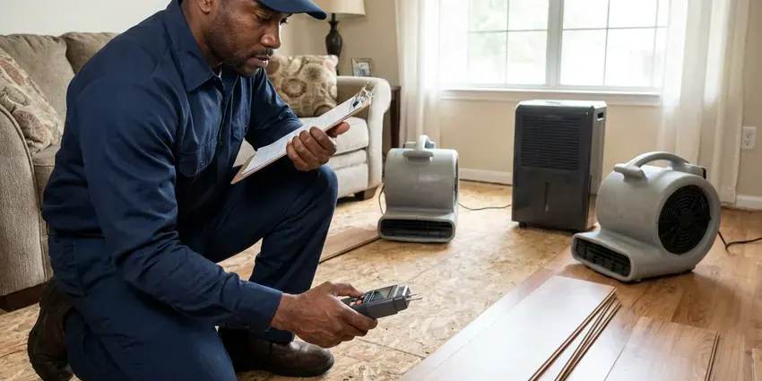

Drainage Services in Dale City, VA
Dealing with drainage trouble in Dale City, VA? FBN Plumbing gets water moving fast and finds out why it clogged.
- Fast Drainage Repair
- Yard and Storm Drainage
- Licensed Plumbers
- Experienced Technicians

Standing Water? Get Help in Dale City, VA.
Tough drain problems are our daily work, including root-filled sewers.
Drainage in Dale City, VA Fixed Right
FBN Plumbing handles drainage inside and outside your home, including sink, tub and main line clogs. Yard work covers French drains and downspout lines. Often there are two problems at once, such as a root-clogged main and a downspout soaking the yard above it.
Our expertise includes:
- Hydro jetting for grease and scale
- Root cutting in sewer laterals
- Snaking, jetting and camera work on indoor drains

Additional Plumbing Maintenance Services in Dale City, VA
Our maintenance and specialty plumbing services in Dale City, VA protect your home year-round and extend the life of every system.


Customers
Why Choose FBN Plumbing for Drainage Services in Dale City, VA?
Drainage protects the foundation and the plumbing at the same time. Pooled water softens soil near the footing. A slow main line raises the odds of sewage coming up the lowest drain in the house.
- Licensed & Insured, Every plumber we send is licensed and insured.
- Whole-Property View, We trace water from the roof and fixtures to the street sewer or a dry well.
- Local Knowledge, We know the drainage problems common in Dale City, VA, including old clay sewers and flat yards.
Citywide Coverage
Commercial properties in Dale City get the same quick response as homeowners. Grease lines are a common restaurant call. Property managers use us for parking lot catch basins and roof drain leaders, and we can work after hours so tenants are not dealing with jetting equipment in the hallway during business hours.
Experienced Team
Each FBN Plumbing plumber holds a license and trains on our jetters and cameras. We keep training. Jetting old cast iron or thin-wall clay takes judgment, because the wrong nozzle or too much pressure can do damage, so our technicians camera the pipe first and adjust the setup to what they see.
Safety-First Approach
Our technicians wear eye protection and gloves on every drain call. Sewage carries bacteria. We protect the floor and disinfect any surface sewage touched before we go.
Trusted Certified Dale City Plumbing Services Professionals
At FBN Plumbing, we take pride in licensed, certified plumbing services throughout Dale City, VA. Credentials matter in this trade. Our plumbers hold recognized industry credentials, and they follow strict safety and quality rules on every repair, installation and maintenance call we run.
Call Us Now PHCC Plumbing Contractor Recognition
PHCC Plumbing Contractor Recognition Better Business Bureau (BBB) Accreditation
Better Business Bureau (BBB) Accreditation Angi Certified Pro
Angi Certified Pro ISO 9001 Quality Management Certification
ISO 9001 Quality Management CertificationReliable Drainage Services in Dale City, VA
Downspout and Roof Drain Solutions in Dale City
Gutters concentrate a lot of roof water into a few points, often right next to the foundation. Soils in Virginia range from sandy ground with a high water table near the coast to dense clay and rocky karst farther inland. We pipe downspouts underground in solid PVC to a pop-up emitter or dry well well away from the house, with a cleanout at the base so the line can be flushed. One inch of rain on 1,000 square feet of roof is about 600 gallons. That is a lot of water.

Residential Drain Cleaning in Dale City
A slow sink or a tub that holds water means something is narrowing the pipe. Kitchen lines usually clog with grease and food, while bathroom lines clog with hair and soap scum bound together near the trap. We clear it with a hand cable. Bigger lines get a drum machine.
Emergency Drain Clog Removal in Dale City, VA
An overflowing toilet or a backed-up shower is a health issue as much as a plumbing one. Wastewater carries bacteria. After clearing it, we figure out if it was one fixture or the main and disinfect the floor.
Outdoor and Storm Drain Cleaning in Dale City
Area drains, catch basins and driveway trench drains fill with leaves and silt. Once the grate is buried, water sheets across the yard or into the garage instead of going down the drain, and the pipe below can pack solid with mud. We vacuum the basins and jet the lines. Fall cleaning helps most.
Storm Drain and French Drain Installation in Dale City, VA
Heavy downpours show you exactly where a yard holds water. Hurricanes, tropical storms and strong coastal storms bring heavy rain and tidal flooding to eastern Virginia, especially in low-lying areas. Catch basins go at the low spots, piped in solid PVC to an outlet sized for real storms. Every system needs a place to discharge.
Fixture Drain Clearing in Dale City
Kitchen sinks clogged with grease and bathroom drains slowed by hair make up most of our fixture calls. Pulling the trap is often the fastest fix. For a toilet, we use a closet auger first, and if that fails we pull the toilet to clear the line from the flange, then reset it on a new wax ring.
Drainage Service Cost Comparison in Dale City, VA
Clearing a single fixture drain typically costs $125 to $300, and a main line clearing runs $200 to $500. Jetting a line usually costs $350 to $800. Camera work adds a few hundred dollars, and French drains are priced by the linear foot.

Dry Well Installation in Dale City, VA
Where there is no place to discharge on the surface, a dry well lets water soak into deeper soil. It only works if the soil drains. A perc check comes first, then the well gets sized for the area it serves and set away from the foundation and septic.
Drainage Plumbers Near Me in Dale City, VA
Local experience counts in drainage work because slope and soil change from one street to the next. Clay soil drains slowly. We test how your soil drains before choosing a dry well or a surface outlet.
Water backing up a drain or flooding a yard calls for a crew that is already nearby. We dispatch from close by. For storm flooding, we can pump out window wells or low spots, clear blocked catch basins, and then come back to plan a permanent drain once the ground dries enough to dig.
FBN Plumbing at a Glance
- Licensed and insured plumbers serving Dale City, VA
- Same-day appointments and 24/7 emergency response
- Upfront, flat-rate pricing before work begins
- 4.9-star rated by 798+ Virginia customers
Dale City Map
Dale City Information
- Population
- 72,088
- Area codes
- 571/703/202
- Service area
- Dale City and towns within a 40 mile drive
- Nearby
- Centreville, Alexandria, Arlington, Reston
Drainage in Dale City, VA needs to be sized for the big storms. Hurricanes, tropical storms and strong coastal storms bring heavy rain and tidal flooding to eastern Virginia, especially in low-lying areas. We size yard drains and pipe for that.
Talk to a Plumber
Call FBN Plumbing for reliable plumbing work done by licensed pros in Dale City, VA.
Our Specialized Plumbing Services in Dale City, VA
At FBN Plumbing, we handle the full list of plumbing services across Dale City, VA. From leak detection to full system installs, our team works fast and charges fair prices on homes and commercial properties alike. Here are the core services we offer:


How Our Drainage Service Works in Dale City, VA
We keep it straightforward: diagnose, explain the options and install a lasting fix.
Request a Quote
Call (434) 230-6997 to book a drain visit. We confirm the time by text.
On-Site Diagnosis
A licensed plumber looks at the line, often on camera, and explains the fix.
Clear & Clean
We snake or jet the line based on what we find, then test the flow.
Frequently Asked Questions About Drainage Services in Dale City
Most basic drain clearing in Dale City, VA runs $150 to $500. A main line costs more than a sink. Jetting costs more than cabling, and sewer repairs run from a few thousand for a spot fix to much more for replacement.
Yes, runoff that pools against the house can work against the foundation for years. Soils in Virginia range from sandy ground with a high water table near the coast to dense clay and rocky karst farther inland. Getting roof water away from the walls with extended downspouts, a French drain, and soil graded to fall at least six inches over the first ten feet takes most of that stress off. Downspouts are the cheapest fix.
Slow sinks and gurgling drains are the early signs. Sewer odor near a drain or cleanout often follows. In the yard, standing water a day after rain or washed-out mulch means the water has nowhere to go.
Some do. Busy kitchens benefit from jetting once a year. Root-prone sewers need cutting every 12 to 18 months, and scaled cast iron every couple of years.
They solve different problems. A French drain collects water that soaks into the soil. A channel drain catches surface water sheeting across concrete, like a driveway that slopes toward the garage, and many yards need one of each because the water arrives both ways during a hard storm.
A single fixture drain usually takes about an hour. Main lines take one to two hours. Camera work adds 30 to 60 minutes, and a buried or missing cleanout adds more.
Drain clearing carries a service guarantee for a set period. If the line clogs again in that window, we come back. The guarantee assumes the line is sound, so if the camera shows roots through a broken joint or a collapsed section, we tell you before we leave that clearing is a temporary fix.
Mineral scale inside pipes narrows them and traps grease, hair and soap. Even moderate hardness in Dale City can leave scale in water heaters over time, so periodic flushing helps them run longer and more efficiently. Older galvanized and cast iron drains are the worst, because their rough interior gives buildup something to cling to, and every new layer narrows the pipe a little more. A jetter clears the buildup.
What Our Customers Say About Our Plumbing Experts

Paul B.
Our pit pump ran nonstop even in dry weather. The plumber found the check valve was stuck open, so the same water kept cycling back into the pit. New valve, new float switch, done in an hour. It runs quiet now.
Sump Pump · Arlington, VA
Daniel K.
A pipe burst in the garage ceiling at 11 at night. Someone answered on the second ring, and the plumber was in my driveway about fifty minutes later. He shut off the main, cut out the split section, and had water back on before 2 am.
Emergency Plumbing · McLean, VATyler J.
We bought a taller comfort height toilet for my dad, who just had knee surgery. The plumber pulled the old one, found the flange was cracked, and replaced it before setting the new bowl. Took about two hours.
Toilet Installation · Centreville, VA
Lisa C.
Water was pouring out from under the washing machine on a holiday weekend. FBN Plumbing talked me through closing the valves over the phone and had a plumber at the house within ninety minutes. It was a burst fill hose.
Emergency Plumbing · Alexandria, VA
James P.
Our restaurant had a slow leak at the hand sink that was rotting the cabinet base. FBN Plumbing came in at six in the morning before prep, replaced the trap and both supply lines, and was packed up before my first cook clocked in.
Commercial Plumbing · Alexandria, VAKevin O.
Before buying our house I paid for a sewer camera inspection. FBN Plumbing found a belly in the line that held standing water about forty feet from the cleanout. We used the video to get the sellers to fix it before closing.
Sewer Camera Inspection · Arlington, VA